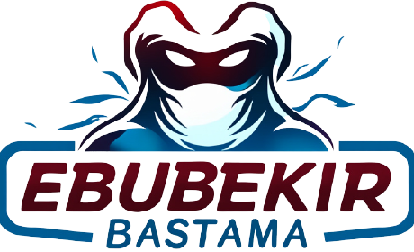

Tek bağlantı
Yayıncı bağlantıyı oluşturur, izleyici bağlantıyı açar. Oda kodu yazmak gerekmez.

EBSLIVEKurulum yok. Üyelik yok. Tarayıcından yayını başlat, özel bağlantıyı gönder; karşı taraf tek tıkla izlesin.
İzinler yalnızca sen onayladığında istenir. Yayın bağlantısını yalnızca güvendiğin kişilerle paylaş.
Yayıncı bağlantıyı oluşturur, izleyici bağlantıyı açar. Oda kodu yazmak gerekmez.
Modern WebRTC desteği olan masaüstü ve mobil tarayıcılarda uygulama kurmadan çalışır.
Ekran, kamera ve mikrofon izinleri işletim sistemi ve tarayıcı tarafından açıkça sorulur.